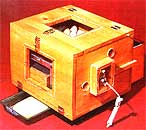
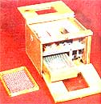
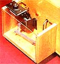
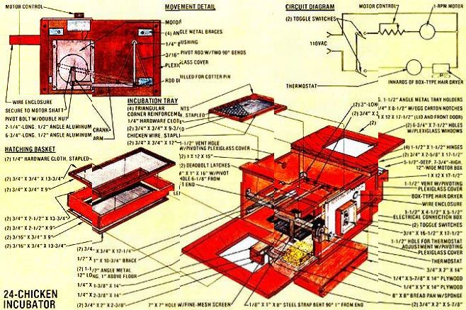

Most folks who keep small flocks of fowl (whether for eggs or meat or both) likely have-at one time or another-considered buying an incubator. The freedom that the devices offer (in maintaining a controlled breeding program and in exchanging less productive hens for better layers) can be a real boon to a farmstead bird operation. Unfortunately, you can purchase quite a few commercially hatched day-old chicks for the price of one quality incubator ... since a store bought apparatus can run from about $150 up (and I mean way up!).
Now it's true that an effective homestead hatchery has to be able to accomplish several jobs at the same time, and that it must do some of them very accurately, but don't let those concerns discourage you from building your own incubator. Once you match the necessary tasks with the various mechanical systems that can handle the chores, the contraption will begin to seem a whole lot less intimidating.
In order to hatch a good percentage of fertile eggs, an incubator must be able to maintain a constant temperature. Though different sorts of eggs require different heat levels, most will grow and hatch well at 99 to 101°F. When incubating chickens and quail, I aim for a steady 99-3/4 °F . . . though the actual temperature may well fluctuate by as much as half a degree. Sure, that does sound imposingly precise, but such accuracy isn't all that difficult to achieve.
The incubator shown in the photos is heated by an old box-type hair dryer (not the fancy new gun variety), which is-in turn-controlled by a thermostat that I purchased from Sears, Roebuck and Co. (ask for Farm and Ranch Catalog No. 32AF88022), for $7.99. Unless the air around the dryer is very warm (it is, after all, designed to work at room temperature), the "high" setting works out fine.
Because even 1°F of inaccuracy in a thermometer could make a vital difference in the percentage of the hatch, it's a good idea to use three or four of the instruments and to average their readings. One quarter turn on the thermostat adjustment screw will produce about a 1°F change inside the incubator, so it is possible to home in pretty close to the right level of warmth. (Of course, you'll want to experiment a bit with the various controls before trying the heating system out on your first batch of eggs.)
If it's either too dry or too humid inside the incubator, the chicks will suffer. The humidity, measured with a wet-bulb thermometer, will ideally start at 85°F and then rise toward 90°F during the last few days of the incubation period. Low air moisture levels can cause the chicks to stick to their shells, and excessive dampness sometimes produces swelling. (It's important to remember that eggs are permeable and that water, and other substances as well, can get into the shell.)
A sponge, sitting in an 8" X 8" bread pan filled with water, adds moisture to the incubator. Of course, the dimensions of the sponge will depend on just what the relative humidity is to start with, and you'll be able to get it right only after a bit of experimentation. I've found that a 1-1/2"-thick, 4" X 8" sponge suits both extremes of our western North Carolina climate . . . which is typically humid in the summer and relatively dry in the winter. Again, try out different sponges and keep careful track of humidity variation on the hygrometer (remember to use a wet-bulb thermometer with light cloth ... such as Sears Farm and Ranch Catalog No. 32AF88025, which sells for $4.69).
Also, be sure to coat the inside and outside of all the wooden parts of the incubator with a plasticized sealer to hold in the humidity. I used a product called Plasticote, which has worked quite well.
The final major requirement for successful incubation is regular movement of the eggs. Studies have shown that a sitting hen will shift her charges an average of 96 times per day. Of course, that frequency can be reduced quite a bit without significantly affecting the hatch, but at least three movements per day are mandatory.
It's possible to get along without a mechanical egg-shifting system, but I've found that holding a steady job prevents me from turning the eggs frequently enough by hand. To solve the problem, I incorporated an automatic system into my mini-hatchery ... and the setup comes highly recommended by this backyard bird breeder!
The eggs in the incubator need to be shifted slowly and smoothly, since jostling would disturb the development of the chicks. I decided to power my system with a Dayton 1-RPM gear motor, coupled to a Dayton solid-state AC-DC and series DC motor control . . . a combination which cuts the oscillation down to about one movement every 45 seconds. [EDITOR'S NOTE: The foregoing items may be available locally. If not, they can be ordered - by a hardware store - from Granger's (the company is a wholesale-only outlet and thus requires a business identification).] The motor is linked to the egg basket by a bent length of 3/8" rod and some angle aluminum ... which form a crank that tilts the assembly approximately 40° in each direction.
[1] Feed your laying hens a good balanced diet, and select only eggs from the best hens.
[2] Pick eggs with good shape and average size. Those that are either too large or too small don't seem to hatch as well.
[3] Never keep the eggs for more than ten days before incubating ... the less waiting, the better. And store them-until you're ready to start the hatching process-at 45 to 60 °F, with plenty of humidity.
[4] Keep the shells clean (but don't wash them). Write on them (to mark dates, etc.) only with soft pencil, and scrub your hands before picking them up.
[5] Preheat the incubator, and let the eggs slowly warm to room temperature before putting them into the hatchery.
[6] Make sure there's enough water in the humidity pan, adding only lukewarm liquid. Cold water could chill the incubator.
[7] Put chicken eggs in trimmed egg containers . . . quail eggs fit nicely in the chicken-wire screen. (The big end always goes up.)
[8] Move quail eggs to the lower rack on the 14th day . . . chickens should be shifted down on the 19th. Don't open the incubator after that point until the hatch is complete.
[9] Leave the brand-new chicks in the incubator for 24 hours . . . or until they dry. (Be sure the screened cover is in place, or they could jump out and drown in the water pan.)
[10] Clean the incubator thoroughly, after each hatching, with a dilute solution of chlorine bleach. And remember to rinse it well, too!
The apparatus shown in the photos and drawings will hold two dozen chicken (or 60 quail) eggs. Of course, it could be built larger or smaller, but if you opt for greater capacity, I'd suggest that you make the device wider rather than try to add another level.
So far I've been able to hatch about 65% of all the fertile quail eggs that I can get (with the exception of one run that was ruined by a power failure). Chicken hatch rates should be a little higher than that . . . perhaps into the 70% range. The local extension agent tells me that those percentages are as good as could be expected from a small commercial incubator, so I think the $60 I invested was money well spent!
|
 |
 |
 |
|
 |
|
|